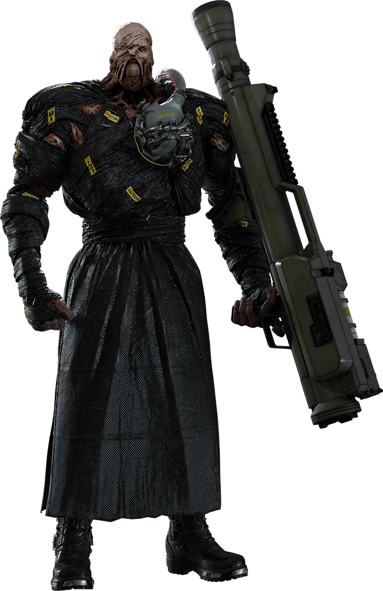

Umbrella Corp.'s Experimental Bio-Weaponry

- Status Report of Bio-Weapon: Nemesis-Tyrant-virus
- Briefiing:Nemesis-T type was a series of experimental Bio Organic Weapons. Created by Umbrella Europe's No. 6 Laboratory, the Nemesis-T Types were the culmination of the Nemesis Project with the successful implantation of NE-α parasites within T-103 hosts, presenting Umbrella with a highly intelligent and powerful creature.
- Transmittance:none
- Symptoms:none
- Incubation Period:none
- Effects:Superior intelligence, Super Strength, Superior Dexterity